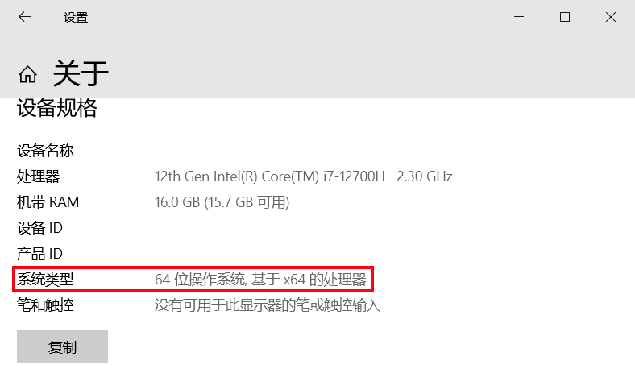

位数的作用
一般来讲，操作系统位数与CPU位数相同。
CPU位数（如32位、64位）指处理器一次能处理的二进制数据宽度（寄存器位数），直接影响计算能力强弱与寻址空间大小。
32位：最大寻址空间为2^32字节（约4GB），限制内存及外设的可用地址范围。64位：理论寻址空间为2^64字节（远超实际需求），支持TB级内存，满足现代计算需求。现在市场上一般使用64位操作系统。
在下载软件时，有的软件会要求您选择合适的安装包，一般来讲，标注“amd64”等类似文本的为64位程序。64位操作系统可以运行32位软件（通过兼容模式），但是32位下不能运行64位程序。
如何辨别系统的位数
Windows10操作系统中可以通过右键“此电脑/计算机/我的电脑”，点击“属性”，在系统类型中查看。
Windows11操作系统则需通过在“设置”应用中的“系统-系统信息”面板内，“设备规格”一项中查看。